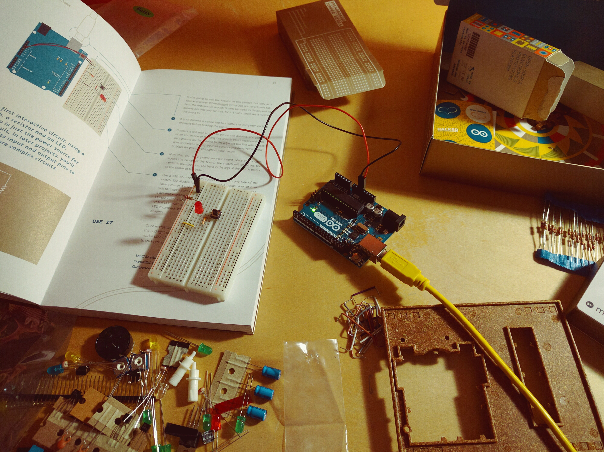

Blog
/
Tangible Electronics for Teaching & Learning
Search
Duplicate
Try Notion

Drag image to reposition
Tangible Electronics for Teaching & Learning
Tags
design
research
tangible
Reading Responses
A Written Response to “Behaviorism, Cognitivism, and Constructivism” and “Cardboard Modeling”
A Written Response to “Understanding the Problem: Design Research” and “MagneTracks: A Tangible Constructionist Toolkit for Newtonian Physics”
A Written Response to “Why Tangibility Matters”, “The Promise of Empathy: Design, Disability, and Knowing the ‘Other’” and “Rethinking Design Thinking”
A Written Response to “Participatory design of technology for inclusive education: A case study” and “Design Practices: “Nothing about Us without Us”
Assignments
MakerSpace Training
Manipulatives: “Story Board”
Arduino Set Up (Blink)